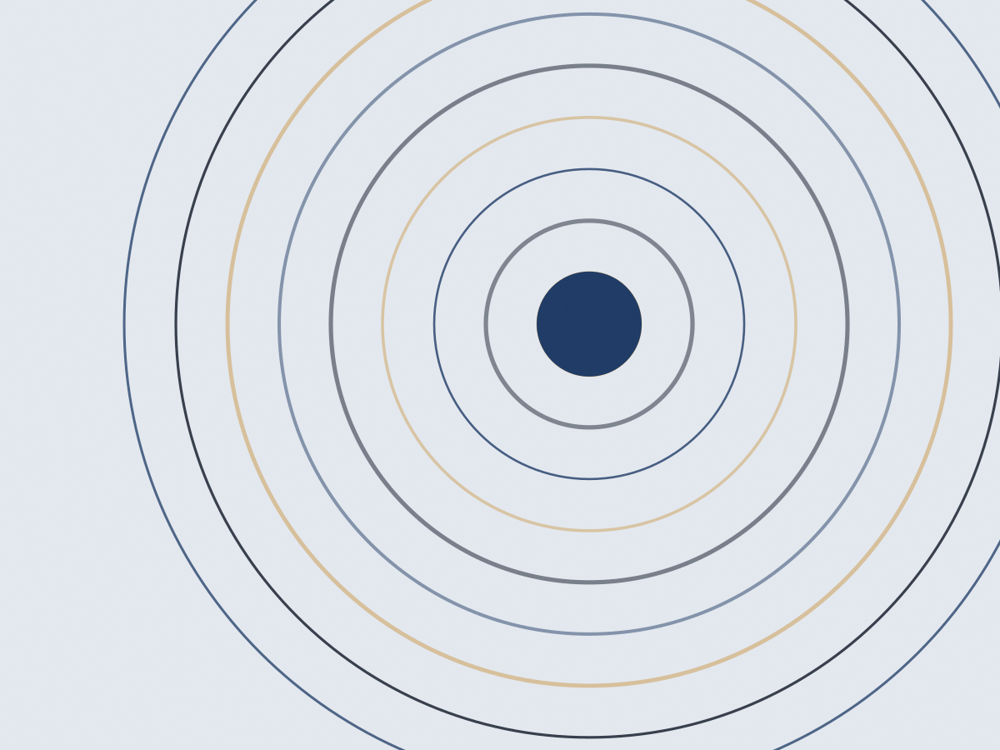
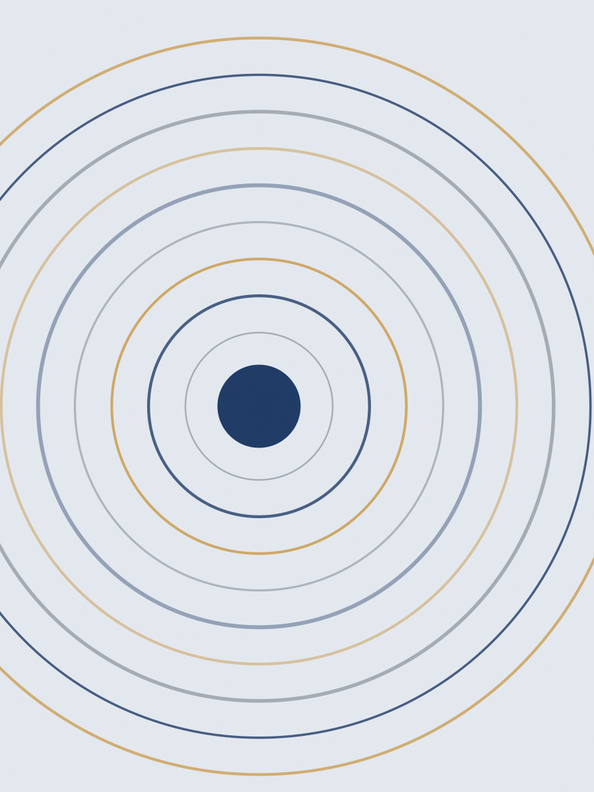
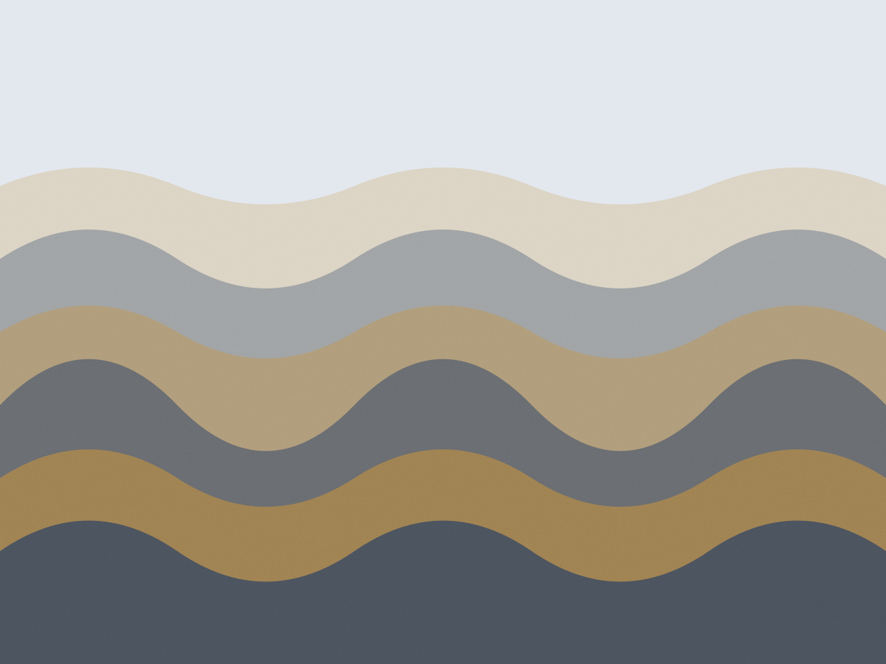

Cambuí, Campinas · FUVEST e UNICAMP
Trinta e oito semanas de grade fixa
Duas turmas de manhã, quarenta alunos em cada. Aula de segunda a sexta, das 7h30 às 12h50, simulado no sábado e correção comentada na segunda. A lista da semana fecha com 180 questões.

A semana tem forma, e ela não muda
Todo domingo às 18h o aluno recebe o roteiro dos cinco dias: o que é aula expositiva, o que é lista, o que é plantão. Quem falta uma terça sabe exatamente o que perdeu e onde repor.
-
Segunda e quarta: aula expositiva de 100 minutos
Duas matérias por dia, no mesmo horário toda semana. O professor fecha o conteúdo no quadro e a lista da semana já sai com as questões separadas por tópico.
-
Terça e quinta: plantão de dúvidas, 14h às 17h
Três professores na sala, sem inscrição prévia. É onde a lista de 180 questões é discutida questão por questão — quem não foi à aula vem só para o plantão.
-
Sexta: fechamento e redação
A tarde é de revisão do que caiu na semana e, a cada quinze dias, de redação entregue à mão. A devolutiva vem com nota nas cinco competências do Enem.
-
Sábado: simulado de 8h às 12h
No formato da prova: 90 questões, cinco alternativas, cartão-resposta preenchido a lápis. A correção comentada abre na segunda-feira, antes da primeira aula.


Grade do extensivo, primeiro semestre
Manhã, turma A. A turma B tem a mesma grade deslocada em uma hora.
| Horário | Seg | Ter | Qua | Qui | Sex | Sáb |
|---|---|---|---|---|---|---|
| 7h30 | Matemática | Física | Matemática | Química | Biologia | Simulado 90 questões |
| 9h20 | Português | História | Geografia | Física | Redação | |
| 11h00 | Literatura | Inglês | Filosofia | Sociologia | Revisão | |
| 14h00 | — | Plantão | — | Plantão | Redação | — |
Edital interno · 2026
- Simulados no ano18
- Questões inéditas por semana180
- Redações corrigidas por aluno17
- Segunda fase: simulados discursivos4
Número de simulado não é número de aprovação. O contrato descreve a grade, a quantidade de correções e o calendário — nada além disso.
Quem dá aula e há quanto tempo dá
Quatro dos nove professores do extensivo. Todos com turma fixa: o aluno não troca de professor no meio do semestre.
- Marta Nogueira Matemática. Geometria analítica e funções, com lista separada por nível de dificuldade.
- Fábio Andrade Física. Mecânica na segunda fase da FUVEST, com prova discursiva corrigida à mão.
- Lívia Prado Redação. Corrige as cinco competências e devolve o parágrafo que puxou a nota para baixo.
- Sérgio Tanaka Biologia. Genética e ecologia, com resumo de uma página por aula para o caderno de revisão.
Coordenação: Alcides Bueno, 22 anos em cursinho. Atende na secretaria às terças e quintas, das 15h às 18h, sem hora marcada.
O que os alunos reclamam e o que eles usam
A lista de terça é grande e ninguém esconde isso. Eu chego no plantão às 14h com as questões que travei e saio com elas resolvidas no caderno — não com um resumo. Clara Bezerra, extensivo 2024, escola pública do Taquaral
Prestei duas vezes. No primeiro ano eu estudava por conta e errava sempre os mesmos tópicos. Aqui o índice de acertos por matéria aparece no boletim e o erro fica visível na semana seguinte. Rodrigo Sampaio, extensivo 2023 e 2024
Preço do extensivo, sem taxa escondida
A anuidade cobre as 38 semanas, os 18 simulados e as 17 correções de redação. Apostila é à parte, e é a única coisa que se compra na secretaria.
Extensivo manhã
R$ 200
por mês, em 12 parcelas · R$ 2.400 no ano
- Grade completa de segunda a sexta, 7h30 às 12h50
- 18 simulados com correção comentada
- 17 redações corrigidas nas cinco competências
- Matrículauma vez, no ato da inscriçãoR$ 320
- Apostilaquatro volumes, comprados na secretariaR$ 180 cada
- Simulado avulsopara quem já é aluno de outro cursoR$ 90
- Segunda chamada de simuladomediante atestado, sem custoR$ 0
- Bolsa por rendaseis vagas por turma, análise em fevereiroaté 50%
Perguntas que chegam na secretaria
Vocês garantem aprovação?
Não, e nenhum cursinho garante. O que está escrito no contrato é a grade de 38 semanas, os 18 simulados, as 17 correções de redação e o calendário de plantões. O resultado depende do que o aluno faz com isso.
Dá para entrar depois que o ano começou?
Até a oitava semana, com reposição do conteúdo em quatro plantões extras. Depois disso a defasagem na lista de exercícios passa de 1.400 questões e a coordenação prefere não matricular.
Como funciona a reposição de aula perdida?
A aula é gravada em áudio e sobe no portal na mesma noite. A reposição presencial acontece no plantão de terça ou quinta, com o professor da matéria.
Tem desconto para irmãos ou para quem já fez o curso?
Irmãos matriculados na mesma turma: 15% na anuidade do segundo. Ex-aluno que volta para o segundo ano de preparação paga meia matrícula.
O curso serve para quem vai prestar só a segunda fase?
Sim, no módulo discursivo: quatro simulados de segunda fase, com correção à mão e devolutiva por critério, em setembro e outubro.
Matrícula 2026 · 80 vagas
Rua Coronel Quirino, 1180 — Cambuí
Secretaria aberta de segunda a sexta, das 8h às 19h, e sábado das 8h às 12h. A inscrição é uma prova diagnóstica de 40 questões e uma conversa de 20 minutos com a coordenação.